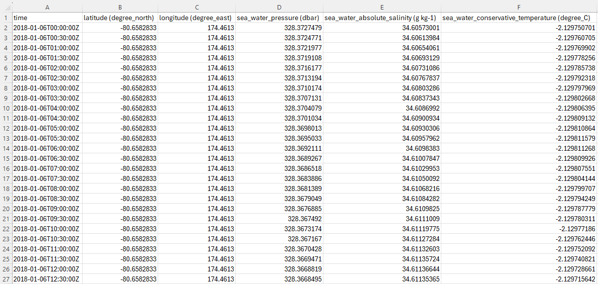
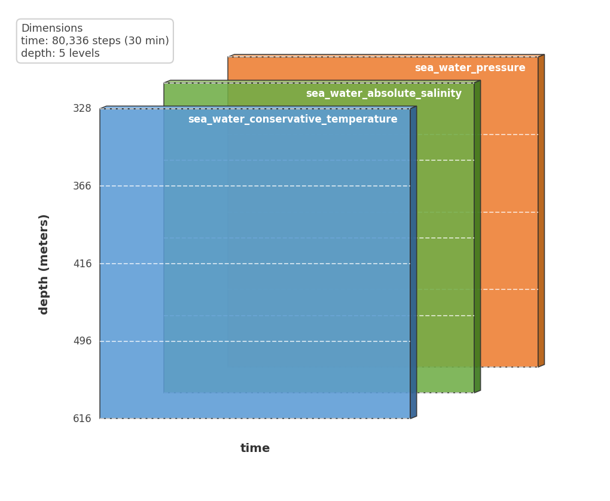

NetCDF Data#
This tutorial builds a CF-1.12 compliant NetCDF file from moored CTD observations beneath the Ross Ice Shelf. Raw data arrives as one CSV file per instrument depth; the script aligns them onto a common time grid and writes a single (time × depth) NetCDF file with correct coordinate variables and global attributes.
Before starting this tutorial, the Nansen Legacy provide an excellent template generator that facilitates easy compilation of NetCDF files. Access the template generator here.
Download input files
shwd21_NoTides.csv
shwd22_NoTides.csv
shwd23_NoTides.csv
shwd24_NoTides.csv
shwd25_NoTides.csv
Download curated netcdf file
hwd2_ctd_detided.nc
Script
Dependencies:
library(tidyverse) # readr, purrr, dplyr, stringr
library(RNetCDF) # NetCDF read/write
import glob
import numpy as np
import pandas as pd
from netCDF4 import Dataset
Input Data#
Each CSV covers one instrument depth at the HWD2 borehole (beneath the central Ross Ice Shelf, 80.66°S 174.46°E). Observations are at 30-minute intervals. Files for different depths may do not share the same end date. Note that the data have already adopted Climate Forecast (CF) parameter naming conventions.

Step 1: Read All Depth Files#
All per-depth CSVs are loaded into a named collection so they can be looped over by depth index later.
files_notides <- list.files(pattern = "^shwd.*_NoTides\\.csv$", full.names = TRUE)
stopifnot(length(files_notides) > 0)
# Named list: one data-frame per file (i.e. per depth)
ds_notides <- files_notides |>
set_names(basename(files_notides)) |>
map(read_csv)
files = sorted(glob.glob("shwd*_NoTides.csv"))
assert len(files) > 0, "No input files found"
# Named dict: one DataFrame per file (i.e. per depth)
ds_notides = {
f: pd.read_csv(f, parse_dates=["time"])
for f in files
}
Step 2: Build the Master Time Grid#
A diagnostic check first confirms that all files share the same start time and that every gap is exactly 30 minutes. Because the check passes, timestamps are already on clean 30-minute boundaries — no floor or ceiling snapping is needed. The master time axis is then built directly from the confirmed start and end times.
step <- 30 * 60 # 30 minutes in seconds
start_check <- ds_notides |>
lapply(function(df) {
t <- as.POSIXct(df[["time"]], tz = "UTC") |> sort()
tibble(
start = first(t),
end = last(t),
n_obs = length(t),
min_gap = min(diff(as.numeric(t))),
max_gap = max(diff(as.numeric(t)))
)
}) |>
bind_rows(.id = "file")
print(start_check)
stopifnot(n_distinct(start_check$start) == 1)
stopifnot(all(start_check$min_gap == step & start_check$max_gap == step))
min_t <- min(start_check$start)
max_t <- max(start_check$end)
master_time <- seq(min_t, max_t, by = "30 min")
cat("Time axis:", length(master_time), "steps from", format(min_t), "to", format(max_t), "\n")
step_s = 1800 # 30 minutes in seconds
diagnostics = []
for fname, df in ds_notides.items():
t = pd.to_datetime(df["time"], utc=True).sort_values()
gaps = t.diff().dropna().dt.total_seconds()
diagnostics.append({
"file": fname,
"start": t.iloc[0],
"end": t.iloc[-1],
"n_obs": len(t),
"min_gap_s": gaps.min(),
"max_gap_s": gaps.max(),
})
diag_df = pd.DataFrame(diagnostics)
print(diag_df.to_string())
assert diag_df["start"].nunique() == 1, "Files do not all start at the same time"
assert (diag_df["min_gap_s"] == step_s).all() and (diag_df["max_gap_s"] == step_s).all(), \
"Timestamps are not all exactly 30 min apart"
min_t = diag_df["start"].min()
max_t = diag_df["end"].max()
master_time = pd.date_range(start=min_t, end=max_t, freq="30min", tz="UTC")
print(f"Time axis: {len(master_time)} steps from {min_t} to {max_t}")
Master time grid concept — each file’s observations slot into the shared axis by timestamp match. Gaps (where an instrument stopped early) are filled with the _FillValue.
master_time slot |
shwd21 (328 dbar) |
shwd22 (366 dbar) |
… |
shwd25 (616 dbar) |
|---|---|---|---|---|
2018-01-06T00:00:00Z |
✓ |
✓ |
… |
✓ |
2018-01-06T00:30:00Z |
✓ |
✓ |
… |
✓ |
… |
||||
2022-08-06T15:30:00Z |
— |
✓ |
… |
✓ |
Step 3: Create the NetCDF File and Define Dimensions#
The file uses two dimensions: time and depth. Latitude and longitude are scalar (single-value) variables because the mooring is fixed in space — no station dimension is needed.
depths <- c(328, 366, 416, 496, 616) # instrument depths (dbar)
lat_val <- -80.65828
lon_val <- 174.4613
fill <- NaN
out_file <- "hwd2_ctd_detided.nc"
ds <- create.nc(out_file, format = "netcdf4")
# Time stored as seconds since the Unix epoch
origin <- as.POSIXct("1970-01-01 00:00:00", tz = "UTC")
time_vals <- as.numeric(difftime(master_time, origin, units = "secs"))
dim.def.nc(ds, "time", length(time_vals))
dim.def.nc(ds, "depth", length(depths))
depths = [328, 366, 416, 496, 616] # instrument depths (dbar)
lat_val = -80.65828
lon_val = 174.4613
fill = np.nan
out_file = "hwd2_ctd_detided.nc"
ds = Dataset(out_file, "w", format="NETCDF4")
# Time stored as seconds since the Unix epoch
origin = pd.Timestamp("1970-01-01", tz="UTC")
time_vals = (master_time - origin).total_seconds().values
ds.createDimension("time", len(time_vals))
ds.createDimension("depth", len(depths))
Step 4: Coordinate Variables#
CF-1.12 requires a coordinate variable (a 1-D variable sharing its dimension’s name) for each dimension. Latitude and longitude are defined without a dimension argument because they are scalar — one fixed position covers the entire dataset.
# --- time ---
var.def.nc(ds, "time", "NC_DOUBLE", "time")
att.put.nc(ds, "time", "standard_name", "NC_CHAR", "time")
att.put.nc(ds, "time", "long_name", "NC_CHAR", "Time")
att.put.nc(ds, "time", "units", "NC_CHAR", "seconds since 1970-01-01 00:00:00")
att.put.nc(ds, "time", "calendar", "NC_CHAR", "proleptic_gregorian")
att.put.nc(ds, "time", "coverage_content_type", "NC_CHAR", "coordinate")
var.put.nc(ds, "time", time_vals)
# --- depth ---
var.def.nc(ds, "depth", "NC_DOUBLE", "depth")
att.put.nc(ds, "depth", "standard_name", "NC_CHAR", "depth")
att.put.nc(ds, "depth", "long_name", "NC_CHAR", "Depth of instrument below sea surface")
att.put.nc(ds, "depth", "units", "NC_CHAR", "dbar")
att.put.nc(ds, "depth", "positive", "NC_CHAR", "down")
att.put.nc(ds, "depth", "coverage_content_type", "NC_CHAR", "coordinate")
var.put.nc(ds, "depth", depths)
# --- latitude (scalar) ---
var.def.nc(ds, "latitude", "NC_DOUBLE", NA)
att.put.nc(ds, "latitude", "standard_name", "NC_CHAR", "latitude")
att.put.nc(ds, "latitude", "long_name", "NC_CHAR", "Latitude of mooring")
att.put.nc(ds, "latitude", "units", "NC_CHAR", "degrees_north")
var.put.nc(ds, "latitude", lat_val)
# --- longitude (scalar) ---
var.def.nc(ds, "longitude", "NC_DOUBLE", NA)
att.put.nc(ds, "longitude", "standard_name", "NC_CHAR", "longitude")
att.put.nc(ds, "longitude", "long_name", "NC_CHAR", "Longitude of mooring")
att.put.nc(ds, "longitude", "units", "NC_CHAR", "degrees_east")
var.put.nc(ds, "longitude", lon_val)
# --- time ---
t_var = ds.createVariable("time", "f8", ("time",))
t_var.standard_name = "time"
t_var.long_name = "Time"
t_var.units = "seconds since 1970-01-01 00:00:00"
t_var.calendar = "proleptic_gregorian"
t_var.coverage_content_type = "coordinate"
t_var[:] = time_vals
# --- depth ---
d_var = ds.createVariable("depth", "f8", ("depth",))
d_var.standard_name = "depth"
d_var.long_name = "Depth of instrument below sea surface"
d_var.units = "dbar"
d_var.positive = "down"
d_var.coverage_content_type = "coordinate"
d_var[:] = depths
# --- latitude (scalar) ---
lat_var = ds.createVariable("latitude", "f8")
lat_var.standard_name = "latitude"
lat_var.long_name = "Latitude of mooring"
lat_var.units = "degrees_north"
lat_var[:] = lat_val
# --- longitude (scalar) ---
lon_var = ds.createVariable("longitude", "f8")
lon_var.standard_name = "longitude"
lon_var.long_name = "Longitude of mooring"
lon_var.units = "degrees_east"
lon_var[:] = lon_val
Step 5: Fill Data Arrays#
For each physical variable, a (time × depth) array of NaN is created and filled by looping over depth files. match() / get_indexer() maps each file’s timestamps onto the master time axis — this ensures observations land in the correct time step even when files have different lengths. Any slot with no observation (i.e. where a sensor stopped early) remains as the _FillValue. The snippet below shows pressure; salinity and temperature follow the same pattern.
arr_pressure <- array(
NA_real_,
dim = c(length(master_time), length(depths)),
dimnames = list(NULL, as.character(depths))
)
for (j in seq_along(depths)) {
df <- ds_notides[[j]]
t_j <- as.POSIXct(df[["time"]], tz = "UTC")
idx <- match(t_j, master_time)
arr_pressure[idx, j] <- df[["sea_water_pressure (dbar)"]]
}
arr_pressure[is.na(arr_pressure)] <- fill
var.def.nc(ds, "sea_water_pressure", "NC_DOUBLE", c("time", "depth"))
att.put.nc(ds, "sea_water_pressure", "standard_name", "NC_CHAR", "sea_water_pressure")
att.put.nc(ds, "sea_water_pressure", "long_name", "NC_CHAR", "Pressure of sea water")
att.put.nc(ds, "sea_water_pressure", "units", "NC_CHAR", "dbar")
att.put.nc(ds, "sea_water_pressure", "coverage_content_type", "NC_CHAR", "physicalMeasurement")
att.put.nc(ds, "sea_water_pressure", "_FillValue", "NC_DOUBLE", fill)
att.put.nc(ds, "sea_water_pressure", "coordinates", "NC_CHAR", "latitude longitude")
att.put.nc(ds, "sea_water_pressure", "comment", "NC_CHAR", "Quality-controlled with tidal cycles removed.")
var.put.nc(ds, "sea_water_pressure", arr_pressure)
arr_pressure = np.full((len(master_time), len(depths)), fill)
for j, df in enumerate(ds_notides.values()):
t_j = pd.DatetimeIndex(df["time"]).tz_localize("UTC")
idx = master_time.get_indexer(t_j)
valid = idx >= 0
arr_pressure[idx[valid], j] = df["sea_water_pressure (dbar)"].values[valid]
v = ds.createVariable("sea_water_pressure", "f8", ("time", "depth"), fill_value=fill)
v.standard_name = "sea_water_pressure"
v.long_name = "Pressure of sea water"
v.units = "dbar"
v.coverage_content_type = "physicalMeasurement"
v.coordinates = "latitude longitude"
v.comment = "Quality-controlled with tidal cycles removed."
v[:] = arr_pressure

Step 6: Global Attributes and Close#
CF-1.12 requires a set of global attributes describing the dataset as a whole. These are what catalogue systems and tools like Panoply or xarray read to understand and cite the file.
att.put.nc(ds, "NC_GLOBAL", "Conventions", "NC_CHAR", "CF-1.12")
att.put.nc(ds, "NC_GLOBAL", "featureType", "NC_CHAR", "timeSeries")
att.put.nc(ds, "NC_GLOBAL", "title", "NC_CHAR",
"Central Ross Ice Shelf Cavity Moored Observations (CTD, detided) 2018-2022")
att.put.nc(ds, "NC_GLOBAL", "summary", "NC_CHAR", paste(
"Detided timeseries from moored oceanographic instruments at the HWD2 borehole",
"beneath the central Ross Ice Shelf. Tidal cycles have been removed.",
"These data support studies of under-ice shelf circulation and ice-ocean interactions."
))
att.put.nc(ds, "NC_GLOBAL", "creator_type", "NC_CHAR", "person")
att.put.nc(ds, "NC_GLOBAL", "creator_name", "NC_CHAR", "Yingpu Xiahou")
att.put.nc(ds, "NC_GLOBAL", "creator_email", "NC_CHAR", "xiahouli@outlook.com")
att.put.nc(ds, "NC_GLOBAL", "creator_institution", "NC_CHAR", "Earth Sciences New Zealand")
att.put.nc(ds, "NC_GLOBAL", "creator_url", "NC_CHAR", "https://orcid.org/0000-0003-1279-0014")
att.put.nc(ds, "NC_GLOBAL", "time_coverage_start", "NC_CHAR", "2018-01-06T00:00:00Z")
att.put.nc(ds, "NC_GLOBAL", "time_coverage_end", "NC_CHAR", "2022-08-06T15:30:00Z")
att.put.nc(ds, "NC_GLOBAL", "geospatial_lat_min", "NC_DOUBLE", lat_val)
att.put.nc(ds, "NC_GLOBAL", "geospatial_lat_max", "NC_DOUBLE", lat_val)
att.put.nc(ds, "NC_GLOBAL", "geospatial_lon_min", "NC_DOUBLE", lon_val)
att.put.nc(ds, "NC_GLOBAL", "geospatial_lon_max", "NC_DOUBLE", lon_val)
att.put.nc(ds, "NC_GLOBAL", "metadata_link", "NC_CHAR", "https://www.seanoe.org/data/00973/108458")
att.put.nc(ds, "NC_GLOBAL", "publisher_name", "NC_CHAR", "SEANOE")
att.put.nc(ds, "NC_GLOBAL", "publisher_url", "NC_CHAR", "https://www.seanoe.org/")
att.put.nc(ds, "NC_GLOBAL", "license", "NC_CHAR", "https://creativecommons.org/licenses/by/4.0/")
att.put.nc(ds, "NC_GLOBAL", "comment", "NC_CHAR",
"All variables contain quality-controlled detided timeseries (tidal cycles removed). Variable names follow CF standard names without modification.")
print.nc(ds)
close.nc(ds)
cat("Wrote:", out_file, "\n")
ds.Conventions = "CF-1.12"
ds.featureType = "timeSeries"
ds.title = "Central Ross Ice Shelf Cavity Moored Observations (CTD, detided) 2018-2022"
ds.summary = ("Detided timeseries from moored oceanographic instruments "
"at the HWD2 borehole beneath the central Ross Ice Shelf. "
"Tidal cycles have been removed.")
ds.creator_type = "person"
ds.creator_name = "Yingpu Xiahou"
ds.creator_email = "xiahouli@outlook.com"
ds.creator_institution = "Earth Sciences New Zealand"
ds.creator_url = "https://orcid.org/0000-0003-1279-0014"
ds.time_coverage_start = "2018-01-06T00:00:00Z"
ds.time_coverage_end = "2022-08-06T15:30:00Z"
ds.geospatial_lat_min = lat_val
ds.geospatial_lat_max = lat_val
ds.geospatial_lon_min = lon_val
ds.geospatial_lon_max = lon_val
ds.metadata_link = "https://www.seanoe.org/data/00973/108458"
ds.publisher_name = "SEANOE"
ds.publisher_url = "https://www.seanoe.org/"
ds.license = "https://creativecommons.org/licenses/by/4.0/"
ds.comment = ("All variables contain quality-controlled detided timeseries "
"(tidal cycles removed). Variable names follow CF standard names "
"without modification.")
ds.close()
print(f"Wrote: {out_file}")
The Result#
The finished file is self-describing: every variable carries enough attribute information that a researcher — or a machine — can understand and correctly use the data without consulting any external documentation.
Each physical variable includes:
standard_name— a term from the CF standard name table, providing a machine-readable, unambiguous identity for the parameterlong_name— a plain-language description for human readersunits— in CF-canonical form, removing any ambiguity about scale or convention_FillValue = NaN— a declared sentinel so any CF-aware tool can distinguish a genuine zero from a missing observation (e.g. where an instrument stopped early)coordinates = "latitude longitude"— links each data array to the mooring’s fixed position
The global attributes carry the dataset-level context that makes the data FAIR:
Findable:
title,summary, andmetadata_linkgive catalogue systems and search engines enough information to surface and describe the datasetAccessible:
license(CC BY 4.0) andpublisher_urltell users exactly how and where to obtain the dataInteroperable:
Conventions = "CF-1.12"declares the standard; CF-aware tools (Panoply, xarray, MATLAB, Ferret) can read, plot, and compare the file without any bespoke parsingReusable:
creator_name,creator_email,creator_institution, andcreator_url(ORCID) ensure correct attribution;commentrecords the key processing step so future users understand the data’s provenance
netcdf hwd2_ctd_detided {
dimensions:
time = 80336 ;
depth = 5 ;
variables:
double time(time) ;
time:standard_name = "time" ;
time:long_name = "Time" ;
time:units = "seconds since 1970-01-01 00:00:00" ;
time:calendar = "proleptic_gregorian" ;
time:coverage_content_type = "coordinate" ;
double depth(depth) ;
depth:standard_name = "depth" ;
depth:long_name = "Depth of instrument below sea surface" ;
depth:units = "dbar" ;
depth:positive = "down" ;
depth:coverage_content_type = "coordinate" ;
double latitude ;
latitude:standard_name = "latitude" ;
latitude:long_name = "Latitude of mooring" ;
latitude:units = "degrees_north" ;
double longitude ;
longitude:standard_name = "longitude" ;
longitude:long_name = "Longitude of mooring" ;
longitude:units = "degrees_east" ;
double sea_water_pressure(depth, time) ;
sea_water_pressure:standard_name = "sea_water_pressure" ;
sea_water_pressure:long_name = "Pressure of sea water" ;
sea_water_pressure:units = "dbar" ;
sea_water_pressure:coverage_content_type = "physicalMeasurement" ;
sea_water_pressure:_FillValue = NaN ;
sea_water_pressure:coordinates = "latitude longitude" ;
sea_water_pressure:comment = "Quality-controlled with tidal cycles removed." ;
double sea_water_absolute_salinity(depth, time) ;
sea_water_absolute_salinity:standard_name = "sea_water_absolute_salinity" ;
sea_water_absolute_salinity:long_name = "Absolute salinity of sea water" ;
sea_water_absolute_salinity:units = "g kg-1" ;
sea_water_absolute_salinity:coverage_content_type = "physicalMeasurement" ;
sea_water_absolute_salinity:_FillValue = NaN ;
sea_water_absolute_salinity:coordinates = "latitude longitude" ;
sea_water_absolute_salinity:comment = "Quality-controlled with tidal cycles removed." ;
double sea_water_conservative_temperature(depth, time) ;
sea_water_conservative_temperature:standard_name = "sea_water_conservative_temperature" ;
sea_water_conservative_temperature:long_name = "Conservative temperature of sea water" ;
sea_water_conservative_temperature:units = "degree_C" ;
sea_water_conservative_temperature:coverage_content_type = "physicalMeasurement" ;
sea_water_conservative_temperature:_FillValue = NaN ;
sea_water_conservative_temperature:coordinates = "latitude longitude" ;
sea_water_conservative_temperature:comment = "Quality-controlled with tidal cycles removed." ;
// global attributes:
:Conventions = "CF-1.12" ;
:featureType = "timeSeries" ;
:title = "Central Ross Ice Shelf Cavity Moored Observations (CTD, detided) 2018-2022" ;
:summary = "Detided timeseries from moored oceanographic instruments at the HWD2 borehole
beneath the central Ross Ice Shelf. Tidal cycles have been removed." ;
:creator_type = "person" ;
:creator_name = "Yingpu Xiahou" ;
:creator_email = "xiahouli@outlook.com" ;
:creator_institution = "Earth Sciences New Zealand" ;
:creator_url = "https://orcid.org/0000-0003-1279-0014" ;
:time_coverage_start = "2018-01-06T00:00:00Z" ;
:time_coverage_end = "2022-08-06T15:30:00Z" ;
:geospatial_lat_min = -80.65828 ;
:geospatial_lat_max = -80.65828 ;
:geospatial_lon_min = 174.4613 ;
:geospatial_lon_max = 174.4613 ;
:metadata_link = "https://www.seanoe.org/data/00973/108458" ;
:publisher_name = "SEANOE" ;
:publisher_url = "https://www.seanoe.org/" ;
:license = "https://creativecommons.org/licenses/by/4.0/" ;
:comment = "All variables contain quality-controlled detided timeseries.
Variable names follow CF standard names without modification." ;
}
Download output file
hwd2_ctd_detided.nc